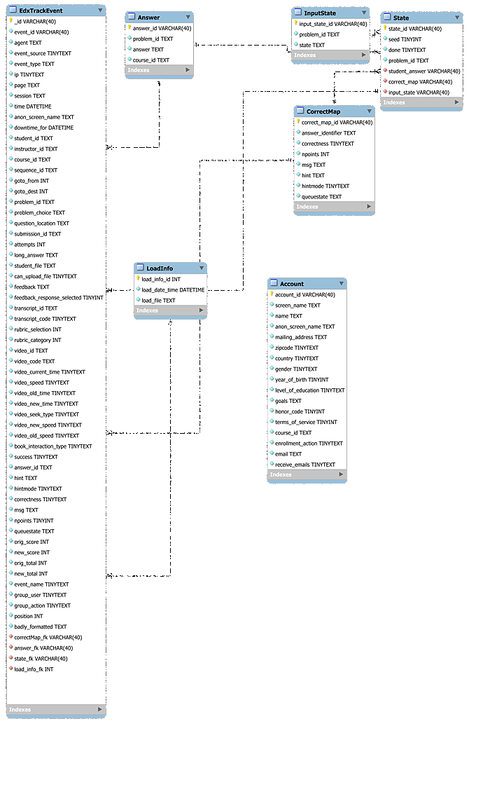

install your database connector.
In SPSS:
File-->Open Database-->New Query
Assuming you have set your connector to point to database Edx,
and that you named it MonoEdx (for whatever fanciful reason),
you will then see this:
Choose whichever real name you gave your connector, and
click next. You now get to choose the fields that you want to
extract from the database:
SPSS has figured out which tables are available in this database, and
you can start moving fields over to the right. Once you again clicked
on next, you will have an opportunity to introduce conditions
on which rows you would like to import:
 I am still a bit puzzled by the interface of this screen. If you get
stuck, we can try to figure it out. If all goes well, you will now see
something like this:
I am still a bit puzzled by the interface of this screen. If you get
stuck, we can try to figure it out. If all goes well, you will now see
something like this:

Browsing and Querying the Data
A number of applications are available for browsing data stored in
MySQL databases, the type in which VPOL data resides. Some
applications
are discussedon
the
Web. Froq
for Mac, and RazorSQL for Mac,
Linux, and Windows are freeware tools used in the VPOL group.
RazorSQL
The application RazorSQL, which works under Mac, Windows, and
Linux, can create either a tunneled or a direct connection to
MySQL. For details on the difference, please
see Appendix B. You begin the connection process
by choosing:
File-->New Tab (no connection)
In the subsequent screen, you click on Click to connect to a
database:
...resulting in:
 This screen allows you to select among different connections you have
already defined. Not having defined any, you click Add Profile,
and pick MySQL from the resulting list of database types that
the application knows about.
Here is where you fill in the particulars. Leave all pre-filled fields
alone. For Profile name you pick any name that reminds you
later of what this connection is about.
Login and Password are the information you received with
your access material. For Host or IP Address you fill in
datastage.stanford.edu. The Port is left
blank. In the Database field you enter one of the databases of
Appendix A. Click Connect, and you
(hopefully) see a screen other than one informing you of failure.
At this point, you can continue via the RazorSQL manual and help
pages.
This screen allows you to select among different connections you have
already defined. Not having defined any, you click Add Profile,
and pick MySQL from the resulting list of database types that
the application knows about.
Here is where you fill in the particulars. Leave all pre-filled fields
alone. For Profile name you pick any name that reminds you
later of what this connection is about.
Login and Password are the information you received with
your access material. For Host or IP Address you fill in
datastage.stanford.edu. The Port is left
blank. In the Database field you enter one of the databases of
Appendix A. Click Connect, and you
(hopefully) see a screen other than one informing you of failure.
At this point, you can continue via the RazorSQL manual and help
pages.
Picking up data and visualizations prepared by staff
or friends
Sometimes staff or friends might prepare either data extracts or
visualizations for you. If they park this information on
infoviz.stanford.edu, they will give you the name of a 'workbook' on
that server. To see the visualizations, and/or to grab the underlying
data as .csv files follow these instructions:
- Go to infoviz.stanford.edu
- Log in as vpol/vpol
- Click on Workbooks
- Find your workbook, and click on it
 You should then see some number of charts that are part of the
material for you. Open one of these views. Hover over marks to
see tooltips. To see the data that is involved in a view, click the
leftmost of the icons above the view.
Its tooltip says Export. You'll get a new window with two tabs:
the one you'll be on will be just the data that went into the
particular view you were on when you clicked export.
If you want to grab all the data, choose the
tab Underlying. You'll see the first 200 rows. Note that you
might see some data in this fully populated table that you don't see
in the visualizations: some rows might be filtered out in the
views. You will need to do the same if appropriate to your further
plans.
You should then see some number of charts that are part of the
material for you. Open one of these views. Hover over marks to
see tooltips. To see the data that is involved in a view, click the
leftmost of the icons above the view.
Its tooltip says Export. You'll get a new window with two tabs:
the one you'll be on will be just the data that went into the
particular view you were on when you clicked export.
If you want to grab all the data, choose the
tab Underlying. You'll see the first 200 rows. Note that you
might see some data in this fully populated table that you don't see
in the visualizations: some rows might be filtered out in the
views. You will need to do the same if appropriate to your further
plans.
 Finally, to download, click the link Download all rows as a text
file
Finally, to download, click the link Download all rows as a text
file
Appendix A: List of Available Databases
Course-to-Go Hosted Databases
c2g-db_winter_2013_forum
c2g-networking_fall2012_forum
c2g-solar_fall2012_forum
Coursera Hosted Databases
coursera-20130421-2305-12feb-gametheory_anonymized_forum
coursera-20130421-2305-12feb-gametheory_anonymized_general
coursera-20130421-2305-12feb-gametheory_hash_mapping
coursera-20130421-2305-12feb-gametheory_unanonymizable
coursera-20130421-2305-12jan-algo1_anonymized_forum
coursera-20130421-2305-12jan-algo1_anonymized_general
coursera-20130421-2305-12jan-algo1_hash_mapping
coursera-20130421-2305-12jan-crypto_anonymized_forum
coursera-20130421-2305-12jan-crypto_anonymized_general
coursera-20130421-2305-12jan-crypto_hash_mapping
coursera-20130421-2305-12jan-pgm_anonymized_forum
coursera-20130421-2305-12jan-pgm_anonymized_general
coursera-20130421-2305-12jan-pgm_hash_mapping
coursera-20130421-2305-12jan-pgm_unanonymizable
coursera-20130422-0245-12jan-ml_anonymized_forum
coursera-20130422-0245-12jan-ml_anonymized_general
coursera-20130422-0245-12jan-ml_hash_mapping
coursera-20130422-0245-12jan-ml_unanonymizable
coursera-20130422-0337-12feb-cs101_anonymized_forum
coursera-20130422-0337-12feb-cs101_anonymized_general
coursera-20130422-0337-12feb-cs101_hash_mapping
coursera-20130422-0459-12mar-automata_anonymized_forum
coursera-20130422-0459-12mar-automata_anonymized_general
coursera-20130422-0459-12mar-automata_hash_mapping
coursera-20130422-0459-12mar-automata_unanonymizable
coursera-20130422-0522-12mar-intrologic_anonymized_forum
coursera-20130422-0522-12mar-intrologic_anonymized_general
coursera-20130422-0522-12mar-intrologic_hash_mapping
coursera-20130422-0530-12apr-compilers_anonymized_forum
coursera-20130422-0530-12apr-compilers_anonymized_general
coursera-20130422-0530-12apr-compilers_hash_mapping
coursera-20130422-0530-12apr-compilers_unanonymizable
coursera-20130422-0632-12jan-hci_anonymized_forum
coursera-20130422-0632-12jan-hci_anonymized_general
coursera-20130422-0632-12jan-hci_hash_mapping
coursera-20130422-0632-12jan-hci_unanonymizable
coursera-20130422-0720-12-002-crypto_anonymized_forum
coursera-20130422-0720-12-002-crypto_anonymized_general
coursera-20130422-0720-12-002-crypto_hash_mapping
coursera-20130422-0809-12-002-algo_anonymized_forum
coursera-20130422-0809-12-002-algo_anonymized_general
coursera-20130422-0809-12-002-algo_hash_mapping
coursera-20130422-0919-12-002-ml_anonymized_forum
coursera-20130422-0919-12-002-ml_anonymized_general
coursera-20130422-0919-12-002-ml_hash_mapping
coursera-20130422-0919-12-002-ml_unanonymizable
coursera-20130422-0936-002-crypto_anonymized_forum
coursera-20130422-0936-002-crypto_anonymized_general
coursera-20130422-0936-002-crypto_hash_mapping
coursera-20130422-0936-002-crypto_unanonymizable
coursera-20130422-1039-005-crypto_anonymized_forum
coursera-20130422-1039-005-crypto_anonymized_general
coursera-20130422-1039-005-crypto_hash_mapping
coursera-20130422-1039-005-crypto_unanonymizable
coursera-20130422-1151-12-001-algo2_anonymized_forum
coursera-20130422-1151-12-001-algo2_anonymized_general
coursera-20130422-1151-12-001-algo2_hash_mapping
coursera-20130422-1204-12-002-gametheory_anonymized_forum
coursera-20130422-1204-12-002-gametheory_anonymized_general
coursera-20130422-1204-12-002-gametheory_hash_mapping
coursera-20130422-1206-12-003-algo_anonymized_forum
coursera-20130422-1206-12-003-algo_anonymized_general
coursera-20130422-1206-12-003-algo_hash_mapping
coursera-20130422-2135-12-001-organalysis_anonymized_forum
coursera-20130422-2135-12-001-organalysis_anonymized_general
coursera-20130422-2135-12-001-organalysis_hash_mapping
coursera-20130422-2135-12-001-organalysis_unanonymizable
coursera-20130422-2135-12-selfservice-compilers_anonymized_forum
coursera-20130422-2135-12-selfservice-compilers_hash_mapping
coursera-20130422-2135-12-selfservice-cs101_anonymized_forum
coursera-20130422-2135-12-selfservice-cs101_anonymized_general
coursera-20130422-2135-12-selfservice-cs101_hash_mapping
coursera-20130422-selfservice-compilers_anon_gen
coursera-20130430-2127-12-001-worldmusic_anonymized_forum
coursera-20130430-2127-12-001-worldmusic_anonymized_general
coursera-20130430-2127-12-001-worldmusic_hash_mapping
coursera-20130430-2127-12-001-worldmusic_unanonymizable
coursera-20130430-2128-12-001-design_anonymized_forum
coursera-20130430-2128-12-001-design_anonymized_general
coursera-20130430-2128-12-001-design_hash_mapping
coursera-20130430-2128-12-001-design_unanonymizable
coursera-20130430-2129-12-001-gamification_anonymized_forum
coursera-20130430-2129-12-001-gamification_anonymized_general
coursera-20130430-2129-12-001-gamification_hash_mapping
coursera-20130430-2129-12-001-genomescience_anonymized_forum
coursera-20130430-2129-12-001-genomescience_anonymized_general
coursera-20130430-2129-12-001-genomescience_hash_mapping
coursera-20130430-2129-12-001-genomescience_unanonymizable
coursera-20130430-2148-12-001-operations_anonymized_forum
coursera-20130430-2148-12-001-operations_anonymized_general
coursera-20130430-2148-12-001-operations_hash_mapping
coursera-20130430-2148-12-001-operations_unanonymizable
coursera-20130506-1717-compilers-003_anonymized_forum
coursera-20130506-1717-compilers-003_anonymized_general
coursera-20130506-1717-compilers-003_hash_mapping
coursera-20130506-1717-compilers-003_unanonymizable
coursera-20130531-1829-12-001-maththink_anonymized_forum
coursera-20130531-1829-12-001-maththink_anonymized_general
coursera-20130531-1829-12-001-maththink_hash_mapping
coursera-20130531-1829-12-001-maththink_unanonymizable
coursera-20130701-1010-childnutrition-001_anonymized_forum
coursera-20130701-1010-childnutrition-001_anonymized_general
coursera-20130701-1010-childnutrition-001_hash_mapping
coursera-20130701-1010-childnutrition-001_unanonymizable
coursera-20130701-1010-crypto-006_anonymized_forum
coursera-20130701-1010-crypto-006_anonymized_general
coursera-20130701-1010-crypto-006_hash_mapping
coursera-20130701-1010-crypto-006_unanonymizable
coursera-20130701-1010-democraticdev-001_anonymized_forum
coursera-20130701-1010-democraticdev-001_anonymized_general
coursera-20130701-1010-democraticdev-001_hash_mapping
coursera-20130701-1010-democraticdev-001_unanonymizable
coursera-20130701-1010-einstein-001_anonymized_forum
coursera-20130701-1010-einstein-001_anonymized_general
coursera-20130701-1010-einstein-001_hash_mapping
coursera-20130701-1010-einstein-001_unanonymizable
coursera-20130701-1010-hci-003_anonymized_forum
coursera-20130701-1010-hci-003_anonymized_general
coursera-20130701-1010-hci-003_hash_mapping
coursera-20130701-1010-hci-003_unanonymizable
coursera-20130701-1103-12-001-maththink_anonymized_forum
coursera-20130701-1103-12-001-maththink_anonymized_general
coursera-20130701-1103-12-001-maththink_hash_mapping
coursera-20130701-1103-12-001-maththink_unanonymizable
coursera-20130701-1114-pgm-003_anonymized_forum
coursera-20130701-1114-pgm-003_anonymized_general
coursera-20130701-1114-pgm-003_hash_mapping
coursera-20130701-1114-pgm-003_unanonymizable
coursera-20130701-1234-startup-001_anonymized_forum
coursera-20130701-1234-startup-001_anonymized_general
coursera-20130701-1234-startup-001_hash_mapping
coursera-20130701-1234-startup-001_unanonymizable
coursera-20130701-1256-intrologic-003_anonymized_forum
coursera-20130701-1256-intrologic-003_anonymized_general
coursera-20130701-1256-intrologic-003_hash_mapping
coursera-20130701-1256-intrologic-003_unanonymizable
coursera-20130701-1410-compilers-003_anonymized_forum
coursera-20130701-1410-compilers-003_anonymized_general
coursera-20130701-1410-compilers-003_hash_mapping
coursera-20130701-1410-compilers-003_unanonymizable
coursera-20130701-1426-12-002-compilers_anonymized_forum
coursera-20130701-1426-12-002-compilers_anonymized_general
coursera-20130701-1426-12-002-compilers_hash_mapping
coursera-20130701-1426-12-002-compilers_unanonymizable
coursera-20130701-1434-12-002-intrologic_anonymized_forum
coursera-20130701-1434-12-002-intrologic_anonymized_general
coursera-20130701-1434-12-002-intrologic_hash_mapping
coursera-20130701-1518-12-002-hci_anonymized_forum
coursera-20130701-1518-12-002-hci_anonymized_general
coursera-20130701-1518-12-002-hci_hash_mapping
coursera-20130701-1518-12-002-hci_unanonymizable
coursera-20130701-1546-12-003-crypto_anonymized_forum
coursera-20130701-1546-12-003-crypto_anonymized_general
coursera-20130701-1546-12-003-crypto_hash_mapping
coursera-20130701-1547-001-sustainableag_anonymized_forum
coursera-20130701-1547-001-sustainableag_anonymized_general
coursera-20130701-1547-001-sustainableag_hash_mapping
coursera-20130701-1547-001-sustainableag_unanonymizable
coursera-20130701-1601-12-002-pgm_anonymized_forum
coursera-20130701-1601-12-002-pgm_anonymized_general
coursera-20130701-1601-12-002-pgm_hash_mapping
coursera-20130701-1601-12-002-pgm_unanonymizable
coursera-20130701-1658-12-001-sciwrite_anonymized_forum
coursera-20130701-1658-12-001-sciwrite_anonymized_general
coursera-20130701-1658-12-001-sciwrite_hash_mapping
coursera-20130701-1658-12-001-sciwrite_unanonymizable
coursera-20130701-2048-maththink-002_anonymized_forum
coursera-20130701-2048-maththink-002_anonymized_general
coursera-20130701-2048-maththink-002_hash_mapping
coursera-20130701-2048-maththink-002_unanonymizable
coursera-20130924-1740-crypto-007_anonymized_forum
coursera-20130924-1740-crypto-007_anonymized_general
coursera-20130924-1740-crypto-007_hash_mapping
coursera-20130924-1740-crypto-007_unanonymizable
coursera-20131002-0701-ml-003_anonymized_forum
coursera-20131002-0701-ml-003_anonymized_general
coursera-20131002-0701-ml-003_hash_mapping
coursera-20131002-0701-ml-003_unanonymizable
coursera-demog-algo
coursera-demog-algo2-002
coursera-demog-algo2-2012-001
coursera-demog-algo-003
coursera-demog-algo-004
coursera-demog-algo-2012-002
coursera-demog-antimicrobial-001
coursera-demog-antimicrobial-002
coursera-demog-antimicrobial-003
coursera-demog-antimicrobial-004
coursera-demog-automata
coursera-demog-automata-002
coursera-demog-childnutrition-001
coursera-demog-clinicaltrials-001
coursera-demog-compilers
coursera-demog-compilers-003
coursera-demog-compilers-2012-002
coursera-demog-compilers-selfservice
coursera-demog-computervision-001
coursera-demog-crypto
coursera-demog-crypto2-2013-001
coursera-demog-crypto-004
coursera-demog-crypto-005
coursera-demog-crypto-006
coursera-demog-crypto-007
coursera-demog-crypto-2012-002
coursera-demog-crypto-2012-003
coursera-demog-cs101
coursera-demog-cs101-002
coursera-demog-cs101-selfservice
coursera-demog-db
coursera-demog-democraticdev-001
coursera-demog-democraticdev-002
coursera-demog-dgplay-001
coursera-demog-emscardiology-001
coursera-demog-environphys-001
coursera-demog-environphys-002
coursera-demog-gametheory
coursera-demog-gametheory-003
coursera-demog-gametheory-2012-002
coursera-demog-ggp-001
coursera-demog-hci
coursera-demog-hci-003
coursera-demog-hci-2012-002
coursera-demog-intrologic
coursera-demog-intrologic-003
coursera-demog-intrologic-004
coursera-demog-intrologic-2012-002
coursera-demog-maththink-002
coursera-demog-maththink-003
coursera-demog-maththink-2012-001
coursera-demog-ml
coursera-demog-ml-003
coursera-demog-ml-2012-002
coursera-demog-nlp
coursera-demog-nlp-002
coursera-demog-organalysis-002
coursera-demog-organalysis-2012-001
coursera-demog-palliativemed-001
coursera-demog-pgm
coursera-demog-pgm-003
coursera-demog-pgm-2012-002
coursera-demog-sciwrite-2012-001
coursera-demog-security
coursera-demog-startup-001
coursera-demog-startup-002
coursera-demog-vidmooc-001
coursera_2012_cs101_anonymized_general
coursera_2012_cs101_hash_mapping
coursera_2012_cs101_pii
coursera_2012_db_anonymized_general
coursera_2012_db_hash_mapping
coursera_2012_db_pii
coursera_2012_hci_anonymized_forum
coursera_2012_hci_anonymized_general
coursera_2012_hci_hash_mapping
coursera_2012_hci_pii
coursera_2012_hci_unanonymizable
coursera_2012_logic_anonymized_forum
coursera_2012_logic_anonymized_general
coursera_2012_logic_hash_mapping
coursera_2012_logic_pii
coursera_2012_maththink_anonymized_forum
coursera_2012_maththink_anonymized_general
coursera_2012_maththink_hash_mapping
coursera_2012_maththink_pii
coursera_2012_maththink_unanonymizable
coursera_2012_ml_anonymized_forum
coursera_2012_ml_anonymized_general
coursera_2012_ml_hash_mapping
coursera_2012_ml_pii
coursera_2012_ml_unanonymizable
coursera_2012_pgm_anonymized_forum
coursera_2012_pgm_anonymized_general
coursera_2012_pgm_hash_mapping
coursera_2012_pgm_pii
coursera_2012_pgm_unanonymizable
coursera_2012_sciwri_anonymized_forum
coursera_2012_sciwri_anonymized_general
coursera_2012_sciwri_hash_mapping
coursera_2012_sciwri_pii
coursera_2012_sciwri_unanonymizable
coursera_eventing_001-sustainableag
coursera_eventing_002-crypto
coursera_eventing_005-crypto
coursera_eventing_12-001-algo2
coursera_eventing_12-001-maththink
coursera_eventing_12-001-organalysis
coursera_eventing_12-001-sciwrite
coursera_eventing_12-002-algo
coursera_eventing_12-002-compilers
coursera_eventing_12-002-crypto
coursera_eventing_12-002-gametheory
coursera_eventing_12-002-hci
coursera_eventing_12-002-intrologic
coursera_eventing_12-002-ml
coursera_eventing_12-002-pgm
coursera_eventing_12-003-algo
coursera_eventing_12-003-crypto
coursera_eventing_Machine Learning (ml-003)_clickstream_export
coursera_eventing_childnutrition-001
coursera_eventing_compilers-003
coursera_eventing_crypto-006
coursera_eventing_democraticdev-001
coursera_eventing_einstein-001
coursera_eventing_intrologic-003
coursera_eventing_maththink-002
coursera_eventing_pgm-003
coursera_eventing_startup-001
OpenEdx Hosted
Edx
ExPrivate
NovoEd Hosted Databases
novoed-crs_23_ACrashCourseonCreativity
novoed-crs_24_TechnologyEntrepreneurshipPart1
novoed-crs_25_Finance
novoed-crs_29_OrganizationalBehavior
novoed-crs_30_HippocratesChallenge
novoed-crs_46_DesignThinkingActionLab
novoed-crs_ACrashCourseonCreativity
novoed-crs_AdvancedEntrepreneurship
novoed-crs_BusinessManagementforEEandCSStudents
novoed-crs_DesigningaNewLearningEnvironment
novoed-crs_EntrepreneurshipinEnvironmentalEngineering
novoed-crs_Finance
novoed-crs_GraphPartitioningandExpanders
novoed-crs_MobileHealthWithoutBorders
novoed-crs_OrganizationalBehavior
novoed-crs_StartupBoards
novoed-crs_SustainableProductDevelopment
novoed-crs_Technology_Entrepreneurship
novoed-crs_email_23_ACrashCourseonCreativity
novoed-crs_email_24_TechnologyEntrepreneurshipPart1
novoed-crs_email_25_Finance
novoed-crs_email_29_OrganizationalBehavior
novoed-crs_email_30_HippocratesChallenge
novoed-crs_email_46_DesignThinkingActionLab
novoed-crs_email_ACrashCourseonCreativity
novoed-crs_email_AdvancedEntrepreneurship
novoed-crs_email_BusinessManagementforEEandCSStudents
novoed-crs_email_DesigningaNewLearningEnvironment
novoed-crs_email_EntrepreneurshipinEnvironmentalEngineering
novoed-crs_email_Finance
novoed-crs_email_GraphPartitioningandExpanders
novoed-crs_email_MobileHealthWithoutBorders
novoed-crs_email_OrganizationalBehavior
novoed-crs_email_StartupBoards
novoed-crs_email_SustainableProductDevelopment
novoed-crs_email_Technology_Entrepreneurship
vl_2013_boards
vl_2013_creativity
vl_2013_education
vl_2013_finance
vl_2013_venture
Appendix B: Explanation of OpenEdx data fields
The Edx and EdxPrivate databases provide a lossless translation from
the OpenEdx platform tracking logs to relational tables. The
translation was constructed based on tracking logs of Stanford's
OpenEdx classes, observed up to October 2013.
Each entry in a tracking log contains information about one small
interaction that one student undertook with the learning
platform. Examples are the submission of a problem solution, a video
control action, like starting a video, or seeking forward, or the
initial creation of an account. The logs were designed to hold every
piece of information that might need to be captured in the future. Not
all of the log fields are currently in use. Of the many columns in the
relational tables only some therefore need to be considered at this
point. We describe these columns now, table by table, and in
alphabetical order. Given the sparsity of field use, plus the fact
that important information is replicated to the EdxTrackEvent
table, researchers will likely need to query only that table, plus
the Answer table. The latter is required if the actual answer
to a problem solution submission needs to be retrieved.
Please also see
the
OpenEdx
Tracking Log documentation of the original JSON formatted
fields. Those descriptions are authoritative.

The first word in the following descriptions are column names, the
information following the name is the respective column's datatype,
and a brief explanation of the column's semantics. Three question
marks indicate that a column's semantics are ill understood by the
author of this guide. In each case the lack of understanding arises
either from a lack of documentation for a field in the original
tracking logs, or from the author's ignorance about the greater
context of the platform.
EdxTrackEvent Table
_id VARCHAR(40): unique identifier.
agent TEXT: description of the student's browser software.
anon_screen_name TEXT: identifier assigned to each student to
protect their privacy. The identifier is created by applying a hash
function to the student's screen name. The screen name is held in a
separate table Account that is located in a separate
database, EdxPrivate with strict access permissions.
answer_fk VARCHAR(40): foreign key to the Answer table
where individual student answers to problems are stored, one answer
submission at a time. This column is used to join
the EdxTrackEvent table to the Answer table in queries
that refer to both tables.
answer_id TEXT: unique identifier of one student's answer to
one problem. Rarely needed.
attempts INT: number of attempts at a problem.
badly_formatted TEXT: about 0.8% of entries in the tracking
logs are malformed, and can therefore not be mapped to the tables in
this database. The raw text is provided in this column for reference.
book_interaction_type TINYTEXT: currently empty
can_upload_file TINYTEXT: indicates whether a student is able
to upload a file. Rarely needed.
correctMap_fk VARCHAR(40): foreign key to the CorrectMap table
where information about answers to problems is stored. This
information includes, for example, whether a hint was provided. Since
most of the CorrectMap entries are not used, this column is
also rarely used.
correctness TINYTEXT: empty. See success for the
operative field.
course_id TEXT: computer readable identifier for the course
about which a row provides information. More useful is the human
readable course name in column course_display_name.
downtime_for DATETIME: amount of time the OpenEdx platform
server that creates the tracking logs was turned off. When this field
is empty, or contains 00:00:00, no downtime was detected between the
current row and the previous row. Else the column contains the amount
of downtime. This column is derived from the server heartbeats.
event_id VARCHAR(40):identifier of an event. This column is
ties together multiple rows that contain information about the same
event. Translation of some original tracking log entries to a
relational format sometimes requires that the information contained in
those entries is spread across two or three rows. The situation arises
when an original entry contains pieces of data that must be spread
across three or more tables, such as the EdxTrackEvent< table
the CorrectMap table, and the Answer table. In this
example a first row is created in EdxTrackEvent that has its
correctMap_fk set to reference the respective Answer table
row. A second row in EdxTrackEvent will have its answer_fk
column reference the CorrectMap table. The columns in the two
EdxTrackEvent rows that are not foreign keys are repeated.
event_name TINYTEXT:???
event_source TINYTEXT:indicates whether the event was initiated
by a student's browser, or by the platform server.
event_type TEXT: indicates what happened that triggered the
event of the current row. A long list describes
this column's possible values.
feedback TEXT: empty
feedback_response_selected TINYINT: empty
goto_dest INT: destination of navigation to a learning module
goto_from INT: origin of navigation to a learning module
group_action TINYTEXT: empty
group_user TINYTEXT: empty
hint TEXT: empty
hintmode TINYTEXT: empty
instructor_id TEXT: empty
ip TINYTEXT: the student's originating internet address
load_info_fk VARCHAR(40): foreign key that references a row in
LoadInfo table. This reference enables queries to determine the
date at which the current row was loaded into the database. The
purpose of this information is to enable the queries of a past
research investigation to be repeated. New rows are continuously added
to the database, so a query today may return different values from a
query that produced the data for a research paper last month.
long_answer TEXT: empty
msg TEXT: empty
new_score INT: corrected problem score
new_total INT: corrected total points
npoints TINYINT: number of points for a problem
orig_score INT: original achieved score
orig_total INT: original number of points
page TEXT: URL of a page visited by a student
position INT: ???
problem_choice TEXT: ???
problem_id TEXT: computer readable identifier of a problem. A
more useful column is likely the resource_display_name, which is the
corresponding human readable name. Even that name, however, is only as
good as what the problem set creator provided.
question_location TEXT: ???
queuestate TEXT: either empty if a problem submission was not
queued, or a key/value pair in which the value provides the time of
queuing.
rubric_category INT: ???
rubric_selection INT: ???
sequence_id TEXT: computer readable learning module identifier
session TEXT: computer readable identifier of a user session
state_fk VARCHAR(40): foreign key to the State
table. Rarely needed.
student_file TEXT: name of a student's uploaded file
student_id TEXT: a platform internal identifier of a student.
submission_id TEXT: ???
success TINYTEXT: indicates whether the solution submission to
a problem was 'correct,' or 'not correct'.
time DATETIME: the date and time at which the row's event occurred
transcript_code TINYTEXT: ???
transcript_id TEXT: ???
video_code TEXT: ???
video_current_time TINYTEXT: ???
video_id TEXT: computer readable identifier of a video. The
human readable column resource_display_name is likely more informative.
video_new_speed TINYTEXT: target video speed for events that
speed or slow a video's playback speed.
video_new_time TINYTEXT: destination play head position for
video seek events.
video_old_speed TINYTEXT: the initial speed of a video at the
outset of an event that changes video speed.
video_old_time TINYTEXT: initial playhead position for events
that request video seek.
video_seek_type TINYTEXT: ???
video_speed TINYTEXT: the video speed at the time of a video
speed information request ???
Answer Table
answer_id VARCHAR(40): unique key identifying this row. The key is
used in the EdxTrackEvent table's answer_fk to reference
a row in this table.
problem_id TEXT: computer readable identifier of the problem to
which this row is the answer. To find the corresponding human readable
name:
SELECT resource_display_name
FROM Answer, EdxTrackEvent
WHERE EdxTrackEvent.answer_fk = Answer.answer_id
answer TEXT: text of the student's answer
course_id TEXT: computer readable identifier of the associated
class. To find the human readable course name:
SELECT course_display_name
FROM Answer, EdxTrackEvent
WHERE EdxTrackEvent.answer_fk = Answer.answer_id
CorrectMap Table
correct_map_id VARCHAR(40): unique identifier of this row
answer_identifier TEXT: computer readable identifier of this
answer. Note that his column does not carry the same semantics as
the Answer table's answer_id.
correctness TINYTEXT: one of the values 'correct' and 'not
correct.' This value is replicated int EdxTrackEvent
table's success column.
npoints INT: number of points earned (replicated in EdxTrackEvent table).
msg TEXT: text of a message sent to the student.
hint TEXT: hint provided to the student (replicated in EdxTrackEvent table).
hintmode TINYTEXT: empty, 'on_request,' or 'always' (replicated
in EdxTrackEvent table).
queuestate TEXT: empty, or a key/value pair in which the value
is a date and time (replicated in EdxTrackEvent table).
State Table
state_id VARCHAR(40): unique identifier for this row.
seed TINYINT: problem seed
done TINYTEXT: ???
problem_id TEXT: computer readable identifier of a problem
assignment.
student_answer VARCHAR(40): computer readable identifier for a
student's answer to a problem assignment.
correct_map VARCHAR(40): reference to a CorrectMap row.
input_state VARCHAR(40): reference to an InputState row.
InputState Table
input_state_id VARCHAR(40): unique identifier of this row.
problem_id TEXT: computer readable identifier for a problem assignment.
state TEXT: reference to a row in the State table.
LoadInfo
load_info_id INT: unique identifier of this row. This
identifier is used in the EdxTrackEvent table's loadInfo_fk
column to link an EdxTrackEvent row to its provenance.
load_date_time DATETIME: the date and time when the load
of a particular tracking log file occurred.
load_file TEXT: name of the loaded tracking log file.
Account Table
Note: this table is contained in the EdxPrivate database, because it
contains personally identifiable information.
account_id VARCHAR(40): unique identifier of this row.
screen_name TEXT: the student's chosen screen name. It is
unique in the platform. This constraint is enforced when students
create an account.
name TEXT: student's first and last name.
anon_screen_name TEXT: anonomization name assigned to this
student. That is the name under which information is stored in the EdxTrackEvent table.
mailing_address TEXT: postal address. This is an optional field
during the student's account creation process, so it is sometimes empty.
zipcode TINYTEXT: zip code if the postal address is provided,
and is in the US.
country TINYTEXT: country extracted from the postal address.
gender TINYTEXT: student's gender.
year_of_birth TINYINT: optional during account creation
process, so not always available.
level_of_education TINYTEXT: student's prior education
(primary, secondary, etc) ???
goals TEXT: short, plain text description of the student's goals.
honor_code TINYINT: whether student agreed to the honor code.
terms_of_service TINYINT: whether student agreed to the terms
of service.
course_id TEXT: computer readable identifier of course that the
student signs up for.
enrollment_action TINYTEXT: ???
email TEXT: student's email address
receive_emails TINYTEXT whether or not student wishes to
receive email.
Appendix C: How to Set up an SSH Tunnel
An ssh tunnel is a connection between two computers that encrypts the
information it carries. Sometimes a server machine is running a
service that client applications on another machine can connect
to. For example, Excel connecting directly to a MySQL database is such
an example. Similarly, Froq and RazorSQL, the graphical querying tools
mentioned earlier, might connect directly from your computer to the
MySQL database that runs on the datastage.stanford.edu machine.
This style of direct connection has your password go over the Internet
unencrypted when you log into the database. This vulnerability to wire
tapping is a disadvantage of direct connections. On the other hand,
setting up a direct connection is relatively easy, and client side
applications, the programs you use on your computer to connect to the
database, know how to construct a direct connection.
To protect data more securely, a tunnel may first be
constructed between your computer and the database server
computer. Your commands to the database then first travel encrypted to
the server computer through the tunnel. Once they arrive, the commands
are handled as if they had been issued on the server computer itself
in the first place.
 To set up a tunnel between your computer and datastage.stanford.edu,
you type the command at the bottom of the illustration into a terminal
window before you ask your data access application to try and
get to the data. The command says: set up a secure connection
(ssh) to machine datastage.stanford.edu; to applications
on my own computer the connection is to look like a database to which
I write via my out-port 5556. The connection should function
Like a tunnel (-L). On the database on the other end, the
commands I send should look like they were issued on its
machine (localhost from the database's point of view), and were
issued directly into the in-port where the database normally listens
to (3306), as it does in the direct connection case.
The -f -N just make it so that you can keep using the terminal
window you used to type in the command.
Important point: in order to get into that in-port 22 in the figure,
you will need a password; the same password you would need to log into
that machine. In order to get through the in-port 3306 into the
database within the server, you will need a second password, the one
that authenticates you to the database. You would need that one in the
direct connection as well, unless the database maintainer has not set
a password for you.
To set up a tunnel between your computer and datastage.stanford.edu,
you type the command at the bottom of the illustration into a terminal
window before you ask your data access application to try and
get to the data. The command says: set up a secure connection
(ssh) to machine datastage.stanford.edu; to applications
on my own computer the connection is to look like a database to which
I write via my out-port 5556. The connection should function
Like a tunnel (-L). On the database on the other end, the
commands I send should look like they were issued on its
machine (localhost from the database's point of view), and were
issued directly into the in-port where the database normally listens
to (3306), as it does in the direct connection case.
The -f -N just make it so that you can keep using the terminal
window you used to type in the command.
Important point: in order to get into that in-port 22 in the figure,
you will need a password; the same password you would need to log into
that machine. In order to get through the in-port 3306 into the
database within the server, you will need a second password, the one
that authenticates you to the database. You would need that one in the
direct connection as well, unless the database maintainer has not set
a password for you.